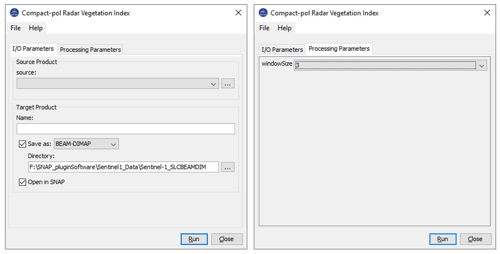

| Compact-pol Radar Vegetation Index Generation | |
Microwave Remote Sensing Lab (MRSLab)
Indian Institute of Technology Bombay, India
Contributors: Dr. Dipankar Mandal et al.
Tel: +91-22-2576-7677
Date: 25 Nov 2020
E-mail: mrscsre@gmail.com; dipankar.agrilengg@gmail.com
URL: http://www.mrslab.in
The Compact-pol Radar Vegetation Index (CpRVI) is calculated from compact-pol 2x2 covariance matric C2.
The Compact-pol RVI (CpRVI) uses the concept of a geodesic distance (GD) between two Kennaugh matrices projected on unit sphere [1]. The ideal depolarizer (ID) is used as a volume model that converts all Stokes vectors into a randomly polarized wave. So, it computes a similarity measure fID between the observed Kennaugh matrix and a Kennaugh matrix corresponding to the ID.
The parameter beta is introduced, which is proportional to the ratio of the minimum to the maximum backscattering power in the same (SC) and the opposite (OC) sense to the transmitted circular polarization. The final formulation is as follows:

where g0 (the first element of the Stokes vector) is a measure of the total average received power and g3 (the fourth element of the Stokes vector) is a measure of the average received power in circular polarization.
Ref: [1] D. Mandal et al., "A Radar Vegetation Index for Crop Monitoring Using Compact Polarimetric SAR Data," in IEEE Transactions on Geoscience and Remote Sensing, vol. 58, no. 9, pp. 6321-6335, Sept. 2020, doi: 10.1109/TGRS.2020.2976661.
Inputs to CpRVI operator: C2 matrix of compact-pol data (Right Circular Transmit is considered).-->data type: float32 Processing window size--> data type int
Output of CpRVI operator: cprvi image-->data type: float32

For results analysis please follow the article "D. Mandal et al., "A Radar Vegetation Index for Crop Monitoring Using Compact Polarimetric SAR Data," in IEEE Transactions on Geoscience and Remote Sensing, vol. 58, no. 9, pp. 6321-6335, Sept. 2020, doi: 10.1109/TGRS.2020.2976661."